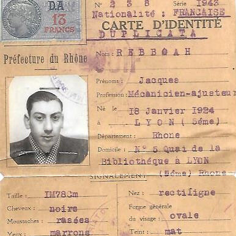

Portrait d’archive
Jacques Rebboah
Jacques REBBOAH
Jacques REBBOAH est né le 08/01/1924 à Lyon en France.
Elève à Ecole des métiers des industries métallurgiques du Rhône, 40 boulevard des Tchécoslovaques à Lyon aujourd'hui lycée Hector-Guimard (23 Rue Claude Veyron, 69007 Lyon).
Rassemblée à Lyon, il est déporté à Auschwitz le 31/07/1944 par le convoi n°77.
Dernière adresse connue :
Nom : REBBOAH
Prénom(s) : Jacques, Jacob, André
Date naissance : 08/01/1924
Âge (ans) : 19
Lieu naissance : Lyon
Pays ou département : Rhône
Lieu rassemblement : Lyon
Dernière adresse : 5, Quai de La Bibliothèque (aujourd'hui Quai Romain-Rolland) puis 7 rue Saint Jean
Ville : Lyon
Code postal : 69005
N° Convoi : 77
Date déportation : 31/07/1944
Informations diverses : Il vivait à Lyon avec ses parents Henri Aaron REBBOAH (né le 14 Novembre 1883 à Mostaganem, Oran en Algérie), cordonnier et Anna REBBOAH (née BENAÏM le 25 Juillet 1887 à Relizane, département d’Oran en Algérie) ainsi que son plus jeune frère Prosper REBBOAH (10/07/1929 à Lyon 5e). Il avaient deux autres frères plus âgés: Maurice REBBOAH (14/07/1913 à Relizane, Oran, Algérie) et Victor REBBOAH (11/11/1918 à Relizane, Oran, Algérie). Ces parents étaient cordonniers et habitaient au 7 rue Saint Jean à Lyon 5ème.
Jacques Rebboah était élève en 1930 à l’Ecole Lamartine (2 rue Fabre 69002), à l’Ecole Condé (44 Rue de Condé, 69002 Lyon) et à Lamartine en 1937 en EPS (Enseignement Primaire Supérieur Minimes. Puis élève mécanicien-ajusteur, à 14 ans à l’École des métiers des industries métallurgiques du Rhône (actuellement lycée Hector Guimard). Il validera son diplôme d’ajusteur-tourneur en juillet 1942. Il est ami de son camarade d’école Maurice Laloum. Ils seront tous deux arrêtés et interrogés le 8 mars 1943 pour détention de tracts et de journaux clandestins (Source: ADMR cote 1035W40). Jacques est arrêté rue Paul Bert ou rue de la Barre (Source: Convoi 77) le 01/07/1944 à Lyon par la milice française, suite à un contrôle d'identité. Il est interné à la prison Montluc, transféré à Drancy le 21/07/1944 puis déporté à Auschwitz le 31/07/1944 par le convoi n°77, où il arriva le 02/08/1944. (En 1948, sa famille recevra un acte officiel du décès survenu le 29 Octobre 1944). En fait, Jacques est transféré le 28 octobre 1944 au camp de Stutthof (en Pologne à proximité de Dantzig, Gdansk aujourd’hui). En novembre 1944, il est transféré à Hailfingen, le camp satellite de Natzweiler-Struthof (matricule 40 866). Début février 1945 il est dirigé sur le camp de Vaihingen-sur-Enz (Bade-Wurtemberg) (Source: Volker Mall et al., Jeder Mensch hat einen Namen / Die Häftlinge des KZ-Außenlagers Hailfingen/Tailfingen Daten und Porträts aller Häftlinge).
Le 7 avril 1945, la 1ère Armée Française libère ce camp de concentration. Il est envoyé à l’hôpital de Diaconesses de Spire (Speyer, Allemagne) où il décèdera le 11 avril 1945 et sera enterré au cimetière de Spire. C’est en 1950 qu’il sera exhumé pour être déplacé au cimetière national de Cernay (en Alsace) à la demande des autorités françaises. C’est ici qu’il repose aujourd’hui au carré 39/45 tombe n° 1169 (Source: Volker Mall ; Muriel NEMOZ née REBBOAH, sa nièce et Jean-Jacques REBBOAH, son neveu, les enfants de Prosper; Association Convoi 77). Son camarade d’internement Jacques Kochen, déporté survivant, témoignera en 1947.
Rebboah (Jacob, Jacques, André), né le 8 janvier 1924, à Lyon (5e), décédé le 29 octobre 1944, à Auschwitz (Pologne) (Journal Officiel) ; En fait Jacques Rebboah, est décédé le 11 Avril 1945 à Speyer, Allemagne.
Lieu de déportation : Auschwitz
Lieu de départ : Drancy
Nombre total de déporté·e·s du convoi : 1300
Gazé·e·s à l'arrivée : 726 (55,8%)
Survivant·e·s en 1945 : 204 (15,7%)